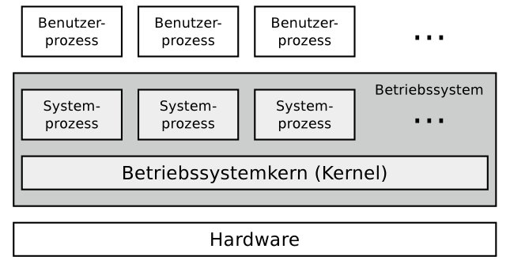

Kapitel:
Grundlagen der
Betriebssysteme
Grundlagen der
Betriebssysteme
Positionierung des Betriebssystems

Betriebsarten
Die Betriebssysteme lassen sich anhand der Betriebsarten Stapel-
betrieb und Dialogbetrieb, Einzelprogrammbetrieb und Mehrpro-
grammbetrieb sowie Einzelbenutzerbetrieb und Mehrprogramm-
betrieb klassifizieren.
- Stapelbetrieb
Stapelverarbeitung (englisch: Batch Processing) heißt auch Sta-
pelbetrieb oder Batchbetrieb. Bei dieser Betriebsart muss jedes
Programm mit allen Eingabedaten vollständig vorliegen, bevor die
Abarbeitung beginnen kann. Auch heutige Systeme ermöglichen
Stapelverarbeitung, zum Beispiel in Form von Batch-Dateien oder
Shell-Skripten. Speziell zur Ausführung von Routineaufgaben ist
diese Form des Stapelbetriebs ein nützliches Werkzeug. Üblicher-
weise ist Stapelbetrieb interaktionslos. Nach dem Start eines Pro-
gramms wird dieses bis zum Ende oder Auftreten eines Fehlers
ohne Interaktion mit dem Benutzer abgearbeitet. Ein Ziel des Sta-
pelbetriebs ist die maximale Prozessorausnutzung.
- Dialogbetrieb
Bei der Betriebsart Dialogbetrieb (englisch: Time Sharing), die
auch Zeitteilbetrieb heißt, arbeiten mehrere Benutzer an einem
Computersystem gleichzeitig und konkurrierend, indem sie sich
die verfügbare Rechenzeit des Hauptprozessors teilen. Eine Her-
ausforderung hierbei ist die faire Verteilung der Rechenzeit. Dieses
geschieht mit Hilfe von Zeitscheiben (englisch: Time Slices). Die
Verteilung der Zeitscheiben an die Programme kann nach unter-
schiedlichen Scheduling-Verfahren erfolgen.
Obwohl die Benutzer gleichzeitig über Terminals an einem
Computer interaktiv arbeiten, sind deren Programme durch den
Mehrprogrammbetrieb unabhängig vonein-
ander.
- Einzelprogrammbetrieb
Beim Einzelprogrammbetrieb (englisch: Singletasking) läuft zu
jedem Zeitpunkt nur ein einziges Programm.
Die quasi-parallele Programm- bzw. Prozessausführung heißt
Mehrprogrammbetrieb (englisch: Multitasking). Mehrere Pro-
gramme können gleichzeitig (bei mehreren Prozessoren bzw.
Rechenkernen) oder zeitlich verschachtelt (quasi-parallel) ausge-
führt werden. Die Prozesse werden in kurzen Abständen abwech-
selnd aktiviert. Dadurch entsteht der Eindruck der Gleichzeitigkeit.
Ein Nachteil des Mehrprogrammbetriebs ist das Umschalten von
Prozessen, welches einen Verwaltungsaufwand (Overhead) verur-
sacht.
- Mehrprogrammbetrieb
Mehrprogrammbetrieb ist trotz des Verwaltungsaufwand sinn-
voll, denn Prozesse müssen häufig auf äußere Ereignisse warten.
Gründe sind zum Beispiel Benutzereingaben, Eingabe/Ausgabe-
Operationen von Peripheriegeräten oder das Warten auf eine
Nachricht eines anderen Programms. Durch Mehrprogrammbe-
trieb können Prozesse, die auf ankommende E-Mails, erfolgreiche
Datenbankoperationen, geschriebene Daten auf der Festplatte oder
ähnliches warten, in den Hintergrund geschickt werden und andere
Prozesse kommen früher zum Einsatz.
Der Verwaltungsaufwand, der bei der quasiparallelen Abarbei-
tung von Programmen durch die Programmwechsel entsteht, ist
im Vergleich zum Geschwindigkeitszuwachs zu vernachlässigen.
- Einzelbenutzerbetrieb
Beim Einzelbenutzerbetrieb (englisch: Single-User Mode) steht
der Computer immer nur einem einzigen Benutzer zur Verfü-
gung. Es existieren Single-User-Betriebssysteme mit Single- und
mit Multitasking-Funktionalität. Beispiele für Betriebssysteme,
die ausschließlich Einzelbenutzerbetrieb bieten, sind MS-DOS,
Microsoft Windows 3x/95/98 und OS/2.
- Mehrbenutzerbetrieb
Beim Mehrbenutzerbetrieb (englisch: Multi-User Mode) kön-
nen mehrere Benutzer gleichzeitig mit dem Computer arbeiten. Die
Benutzer teilen sich hierbei die Systemleistung. Die Systemres-
sourcen müssen mit Hilfe geeigneter Scheduling-Methoden möglichst gerecht verteilt werden. Die verschiedenen
Benutzer müssen (durch Passwörter) identifiziert und Zugriffe auf
Daten und Prozesse anderer Benutzer durch das Betriebssystem
verhindert werden. Beispiele für Betriebssysteme, die Mehrbe-
nutzerbetrieb ermöglichen, sind Linux und andere Unix-ähnliche
Systeme, Mac OS X, sowie die Server-Versionen der Microsoft
Windows NT-Familie. Dazu gehören auch die Versionen Terminal
Server und MultiPoint Server.
8/16/32/64 Bit-Betriebssysteme
Jedes Betriebssystem arbeitet intern mit Speicheradressen einer
bestimmten Länge. Moderne Betriebssysteme werden üblicher-
weise als 64 Bit-Betriebssysteme angeboten. Zahlreiche Linux-
Distributionen sowie mehrere Versionen von Microsoft Win-
dows sind speziell für ältere Hardware zusätzlich noch als
32 Bit-Betriebssysteme verfügbar. Ein Betriebssystem kann nur so
viele Speichereinheiten ansprechen, wie der Adressraum zulässt.
Darum kann ein 64 Bit-Betriebssystem mehr Speicher ansprechen
als ein 32 Bit-Betriebssystem. Die Größe des Adressraums hängt
Hardwareseitig allerdings vom Adressbus ab.
2^n wobei n für Bit-Betriebssystem steht -> So viele Speichereinheiten können adressiert werden